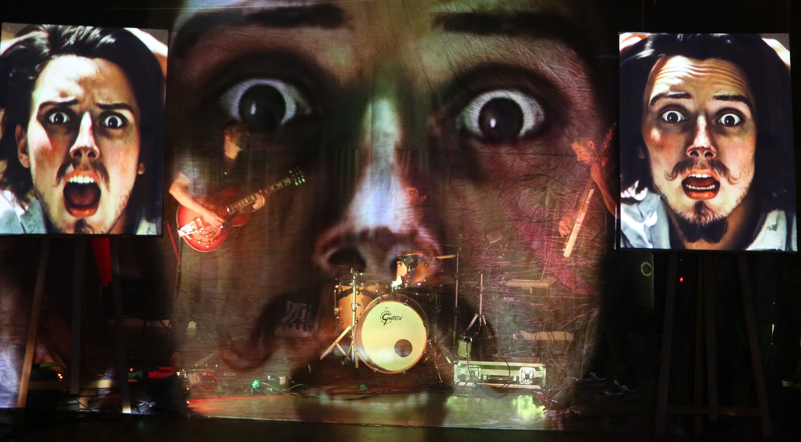
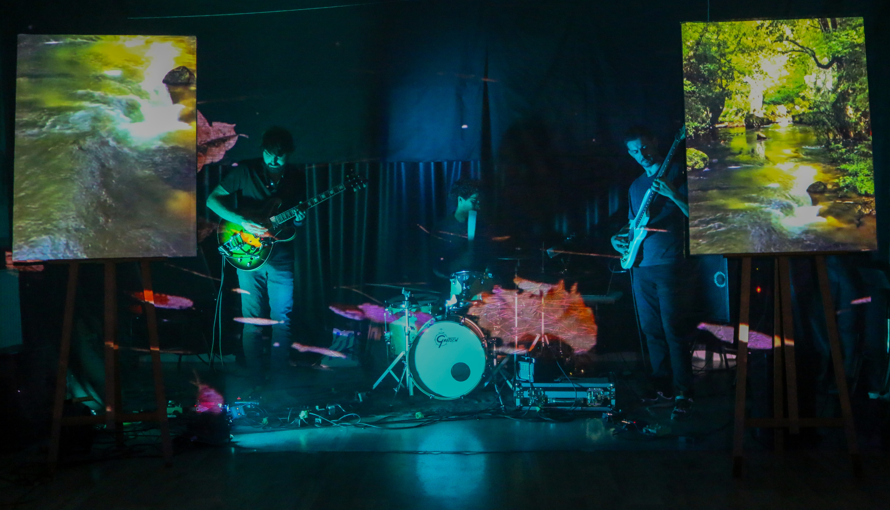

Gus tave —
Un spectacle musical et visuel qui plonge le public dans un dialogue artistique entre peinture animée et musique — inspiré de l'univers de Gustave Courbet.

Peinture
&
musique
Gustave est un spectacle musical et visuel qui plonge le public dans un dialogue artistique entre peinture animée et musique. Inspiré par l'œuvre du célèbre peintre Gustave Courbet, ce projet est né de la rencontre entre trois musiciens et un désir de rendre hommage à l'intensité émotionnelle de ses tableaux.
En collaboration avec Lisa Blondel, artiste plasticienne et scénographe spécialisée dans l'art immersif, Gustave mêle contemplation et musicalité pour embarquer le spectateur au cœur de l'univers visuel de Courbet.
"La peinture est un art essentiellement concret et ne peut consister que dans la représentation des choses réelles et existantes."
— Gustave Courbet, peintre réaliste (1819–1877)


Dispositif
scénique
temps réel
Les tableaux de Courbet sont projetés en temps réel sur toiles, déformés et animés en direct par Hugo Coste depuis la scène. La peinture du XIXe siècle entre en résonance avec la musique — tempo, intensité, dynamique — et se transforme sous les yeux du public.
DMX
L'éclairage DMX est synchronisé à la setlist pour accompagner chaque tableau — lumière froide et minérale pour les paysages, chaude et dense pour les portraits. Les contre-jours sculptent les silhouettes des musiciens, les fondant dans les projections.
& ambiance
Des nappes de fumée basse viennent habiter l'espace entre les musiciens et les projections, créant une profondeur atmosphérique. La lumière se matérialise dans ce voile — les tableaux de Courbet semblent surgir de la brume comme ils surgissent de la mémoire.